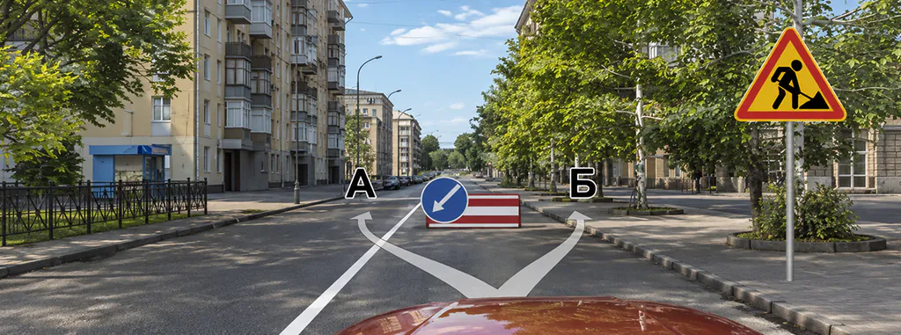

Знаки или разметка: что главнее при противоречии в билетах ПДД

Если дорожный знак и горизонтальная разметка противоречат друг другу, руководствуются знаком. При противоречии временной и постоянной разметки — временной. Сначала нужно установить само противоречие: знак и линия могут уточнять разные условия и действовать одновременно.
Ниже — три вопроса A/B и способ проверить вывод. Это узкий разбор сочетаний, а не замена справочника всех знаков и линий. Не нужно превращать его в правило «одна стрелка отменяет всё»: каждая норма относится к определённой паре требований.
Как распознать настоящее противоречие
Сформулируйте действие, которое определяет каждый элемент. Один разрешает или предписывает проезд по данной траектории, другой запрещает её? Тогда возникает несовместимость. Если знак ограничивает скорость, а разметка разделяет полосы, требования обычно можно выполнить вместе: одно не отменяет другое.
Также проверьте, относится ли знак к вашей полосе, направлению или транспортному средству. Нельзя объявить разметку отменённой на всём перекрёстке, увидев знак, который установлен для другого подъезда. Статус таблички и место установки входят в условие задачи.
Задача 1. Знак против горизонтальной разметки
A/B, билет 19, вопрос 5. Чем необходимо руководствоваться, если значения дорожных знаков и линий горизонтальной разметки противоречат друг другу?
- Требованиями линий разметки
- Требованиями дорожных знаков
- Правила эту ситуацию не регламентируют
Проверить ответ
Верно: Требованиями дорожных знаков.
Вариант «требованиями дорожных знаков» соответствует заключительному правилу раздела о горизонтальной разметке в приложении 2. Оно включает в том числе временные знаки. Наличие линии на асфальте само по себе не даёт ей приоритет перед знаком.
Та же норма говорит о недостаточно различимой разметке. Но не следует делать из неё разрешение игнорировать все видимые линии из-за одного стёртого участка. Нужно определить, какое конкретное требование применяется к вашей ситуации, и соблюдать остальные правила движения.
Задача 2. Белая и оранжевая линии
A/B, билет 20, вопрос 5. Чем необходимо руководствоваться, если нанесённые на проезжей части белые и оранжевые линии разметки противоречат друг другу?
- Белыми линиями разметки
- Оранжевыми линиями разметки
- Правила эту ситуацию не регламентируют
Проверить ответ
Верно: Оранжевыми линиями разметки.
Для временной горизонтальной разметки ПДД устанавливают оранжевый цвет с оговорёнными в приложении 2 исключениями для отдельных видов линий. Если её линии противоречат постоянным, следовать нужно временным. В этой задаче белая и оранжевая линии прямо названы противоречащими, поэтому выбирается оранжевая.
Не запоминайте сокращение «всё цветное временное». Для постоянной разметки ПДД предусматривают несколько цветов, а жёлтые линии запрета остановки или стоянки не становятся временными только из-за цвета. Сначала определяйте вид разметки и её значение.
Также не путайте временную разметку с изображёнными в учебной картинке стрелками траекторий А и Б. Такие стрелки показывают варианты ответа и сами не являются нанесёнными на дорогу линиями разметки.
Задача 3. Препятствие и предписанный объезд

A/B, билет 35, вопрос 5. Вы можете объехать препятствие:
- Только по траектории А
- Только по траектории Б
- По любой траектории из указанных
Проверить ответ
Верно: Только по траектории А.
Перед препятствием установлен 4.2.2 «Объезд препятствия слева». На схеме этому соответствует траектория А. При решении учитывается приоритет знака над разметкой, поэтому привычка автоматически отвергать любую показанную траекторию через линию здесь приводит к неверному ответу.
Но это не разрешение произвольно объезжать любое препятствие через любую сплошную. В билете есть конкретный знак, предписывающий сторону объезда. Если его убрать, получится другая задача с другими условиями. В реальном манёвре остаются требования безопасности и обязанности перед остальными участниками движения.
Таблица для трёх разных конфликтов
| Что противоречит | Чем руководствуются | Где искать норму |
|---|---|---|
| Знак и горизонтальная разметка | Дорожным знаком, включая временный | Приложение 2, раздел о горизонтальной разметке |
| Временная и постоянная разметка | Линиями временной разметки | Тот же раздел приложения 2 |
| Временный и стационарный дорожные знаки | Временным знаком | Приложение 1, заключительные положения |
Это попарные правила. Последняя строка не делает любой жёлтый предмет главным: временный знак нужно распознать по предусмотренным признакам. ПДД относят к временным определённые знаки на жёлтом фоне, а также знаки на переносных опорах. Цвет рекламного щита или ограждения не относится к этой классификации.
Проверка без заучивания ответа
Для новой картинки запишите: «Элемент 1 требует…; элемент 2 требует…; одновременно выполнить можно/нельзя». Только после этого выбирайте нужную строку таблицы. Если требования совместимы, говорить об отмене одного из них преждевременно.
Например, знак направления движения и линия полос могут совместно определять разрешённый манёвр. Разрешённое направление ещё не означает разрешение пересечь любую линию в любом месте. Аналогично знак ограничения скорости и стрелка направления не спорят о приоритете: они отвечают на разные вопросы.
После ответа вернитесь к пояснению и найдите конкретную пару требований. Если объяснение получилось только «знаки всегда главнее», дополните его: над чем, при каком противоречии и для какого направления. Так правило становится применимым к следующему вопросу, а не к одной знакомой иллюстрации.
Для расшифровки линий откройте справочник дорожной разметки, для значения знака — разбор групп знаков. Затем выберите новый билет в PDD Drive и проверьте, можете ли назвать само противоречие до выбора ответа.
Источники и проверка
Откройте вопрос и сформулируйте отдельно требования знака и линии, затем проверьте их совместимость.
Частые вопросы
Что главнее: знак или сплошная разметка?
При противоречии значений дорожного знака и горизонтальной разметки руководствуются знаком. Сначала проверьте, относятся ли оба требования к вашей ситуации и действительно ли они несовместимы.
Белая и оранжевая разметка противоречат. Какую выбрать?
Временную оранжевую разметку. Это прямое условие вопроса A/B 20–5 и правило приложения 2 к ПДД.
Жёлтая разметка всегда временная?
Нет. Цветная разметка может быть постоянной. Временную горизонтальную разметку нужно отличать по установленным ПДД признакам, а не по противопоставлению «белая — цветная».
Любое препятствие разрешает пересечь сплошную?
Нет. В вопросе 35–5 задан конкретный знак объезда слева. Его наличие существенно; переносить ответ на ситуацию без этого знака нельзя.